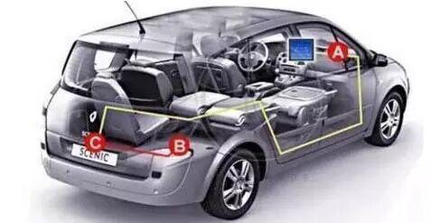
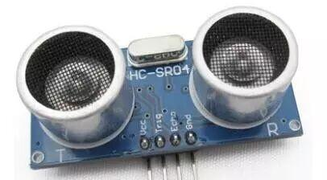
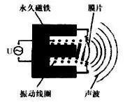
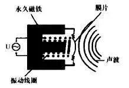
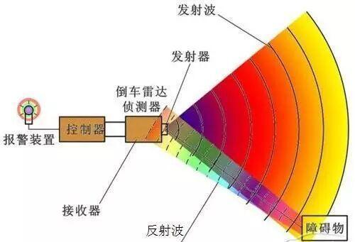
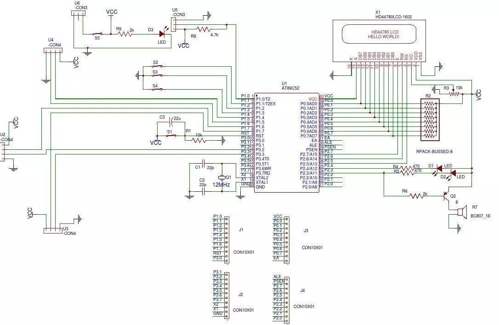
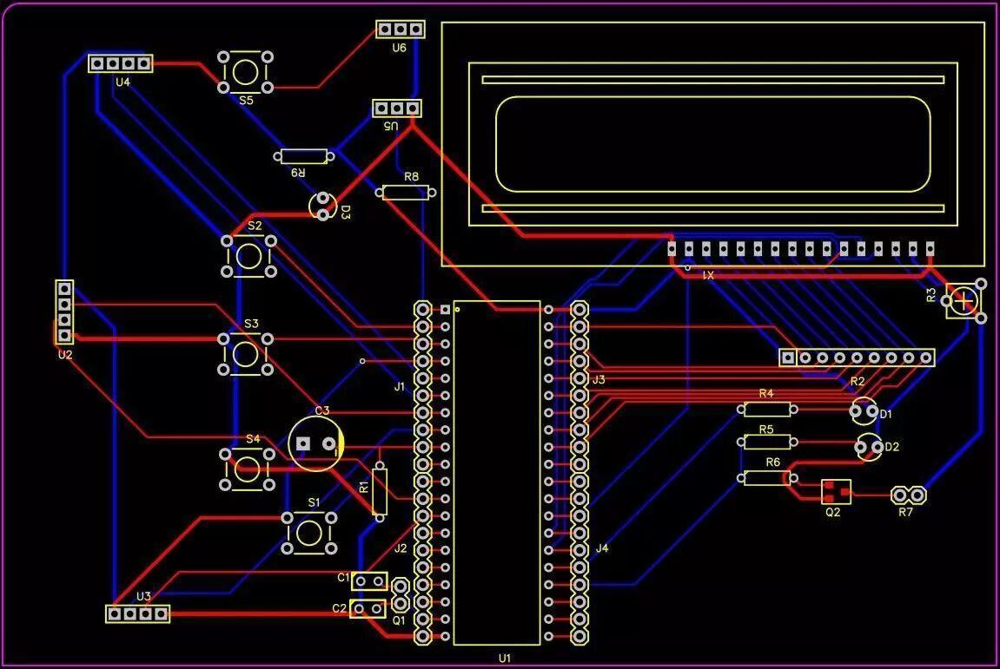

【DIY开源】倒车雷达，其实可以DIY！
以下文章来源于著名的PCB哥，作者著名的PCB哥
电子DIY创易社区，电子DIY爱好者及从业者专属信息服务平台，为打造电子DIY及行业生态圈而不懈奋斗！
随着人们生活水平的不断提高，私家车已经成为很多人的出门首选了，而倒车雷达也已经由几年前的高配车型功能几乎变成了标配功能，作为电子爱好者的你，对倒车雷达这个听起来高大上的东东又了解多少呢？倒车雷达是传统意义上的雷达吗？它的工作原理又是怎样的？今天，PCB哥和大家说说倒车雷达的那些事。
想免费PCB打样的D友注意了，如果你要参与免费PCB打板的活动，点击【任意门】就能跳过去查看活动详情了，机不可失，失不再来！另外，文末左下角的“阅读原文”提供了与本文相关的开源资源，大家可以下载，如果想免费打板，可以点击上面的任意门参加活动就可以了。
开门见山，就像提要里面说的那样，倒车雷达已经被越来越多的人熟知，那么问题来了，倒车雷达真的是传统意义上的雷达吗？倒车雷达的工作原理又是怎样的？下面开始我们今天的话题。

先说说什么是倒车雷达：
（其实不用说大家也知道，不过很是比较细致的说说比较好）
倒车雷达：又称泊车辅助系统，或称倒车电脑警示系统，是汽车驻车或者倒车时的安全辅助装置，能以声音或者更为直观的显示（大家不要把倒车雷达和倒车影像搞混哦~ ）告知驾驶员周围障碍物的情况，解除了驾驶员驻车、倒车和起动车辆时前后左右探视所引起的困扰，并帮助驾驶员扫除了视野死角和视线模糊的缺陷，提高了驾驶的安全性。
）告知驾驶员周围障碍物的情况，解除了驾驶员驻车、倒车和起动车辆时前后左右探视所引起的困扰，并帮助驾驶员扫除了视野死角和视线模糊的缺陷，提高了驾驶的安全性。
拽一句英文，这个应该很少有人知道，倒车雷达的英文名字叫“Parking Distance Control”，也就是“泊车距离控制”的意思，简写就是“PDC”，知道了这个，以后买车或者换车，保准把卖车的问住，又显得你专业，多好！
倒车雷达系统的基本构成：
上面说了什么是倒车雷达，对于我们技术控而言，我们还得知道它由哪几部分构成：
（1）超声波传感器：用于发射以及接收超声波信号，进而通过超声波传感器测量距离。
（2）主机：发射正弦波脉冲给超声波传感器，并处理其接收到的信号，换算出距离值后，将数据与显示器通讯。
（3）显示器或蜂鸣器：接收主机距离数据，并根据距离远近显示距离值和提供不同级别的距离报警音。
倒车雷达的工作原理：
倒车雷达的基本工作原理，我一说，相信大家都不陌生，很多D友都玩过超声波模块，就是下面图片的东东，而很多倒车雷达的基本工作原理就和这种超声波模块的工作原理是基本一致的。

倒车雷达探头一般会分为发射部分和接收部分，并将发射和接收部分“封装”在一起，这里所说的“封装”，也并不是真的把两个元件简单“封装”，我们结合超声波模块理解，其实很多倒车雷达的探头更像是缩小封装后的超声波模块。唯独不同的是，我们常用的超声波模块的发射头和接收头是分离的，而倒车雷达的发射和接收是一体的。
换句话说，一个探头，既是发射端，又是接收端。这也就是为什么超声波模块一般有四条引线，而倒车雷达只有两条引线的原因。
下面我们通过图示的形式，来看看倒车雷达是如何采用一体式的设计，实现发射和接收的。
1、 探头的发射部分通过振动线圈和膜片的振动发出被检测信号。

当车辆后方无障碍物时，发射出的声波不会被反射，探头接收不到任何反馈信号，而到车辆靠近障碍物时，障碍物会反射回一部分声波信号。
2、放射回来的声波信号又通过膜片带动振动线圈，进而产生电信号，这个电信号就可以被倒车雷达控制器检测并进行相应的告警处理了。

是不是和超声波模块的工作原理大同小异呢？当然，超声波模块在工作中是需要单片机等处理芯片的，倒车雷达同样也不例外，当倒车雷达将检测到的反馈信号后，会将这个电信号传送至倒车雷达的控制器，这里的控制器，便可以理解为我们平时使用的单片机了。像下图的样子，便是整个倒车雷达系统工作的原理图了。

从上面这张原理图上，我们可以清楚的了解到，每个探测器，也就是倒车雷达的探头的探测范围是有角度限制的，探测范围角度之外的障碍物，倒车雷达也是探测不到的，所以车辆一般会通过增加探头数量来提高可以被探测到的范围，但是，即使是装有倒车雷达的车辆，也并不是万无一失的。因为，探测盲区仍然存在。
下面的情况，倒车雷达是不会做出反应的
1、过于低矮的障碍物
一般来说低于探头中心10~15cm以下的障碍物就有可能被探头所忽视，而且障碍物距离车位距离越近，这一高度值也就会随之降低，探头检测不到的概率也就随之增加，倒车的危险性也随之增大。
2、过细的障碍物
由于雷达探头发射的声波信号较窄，因此在探测较细的障碍物是存在着较大的 盲区，一些道路上用来阻隔车辆的隔离桩，电线杆上的斜拉钢缆都是危险物品。其实也很好理解，当障碍物过细时，不能讲声波信号有效反射，倒车雷达自然也就变成了瞎子。
3、沟坎
雷达是用来探测障碍物的，车后有沟有坎，那么雷达是绝对不会做出反应的。
现在，你可以自己DIY一套倒车雷达，或者是距离控制系统
好了，说了这么多，相信大家对倒车雷达已经有了比较清晰的了解，很明显，倒车雷达并不是传统意义上的“雷达”，但是在工作原理上，又和传统的“雷达”有相似的地方，PCB哥觉得，正是由于在工作原理上的相通性，才能把倒车雷达叫做“雷达”，其实不止是用在车辆上，生活中很多产品都有类似的应用。例如，很多D友都在做的智能防撞小车，用的也是类似的超声波应用，通过超声波模块，就可以有效的检测小车与环境障碍物的距离，有效避免撞击的发生。下面是使用三套超声波模块制作的超声波防撞系统的原理图和PCB图，图中使用1602作为探测距离的显示，当然，你也可以灵活的运用其他方式对系统进行必要的修改以适应你自己的系统功能要求（源文件在文末左下角的“阅读原文”里提供）


整套系统的原理很简单，首先，单片机将调制好的波形信号传送至系统中的三套超声波模块进行信号的一次发射，当遭遇障碍物时，超声波模块将检测到的反馈信号送回单片机进行判断和处理，当然，你可以通过1602或者12864等显示器件进行各个方向障碍物距离的显示，也可以直接通过蜂鸣器进行距离告警，当然，你也可以通过程序控制小车停车或者转向，那都不叫事儿！